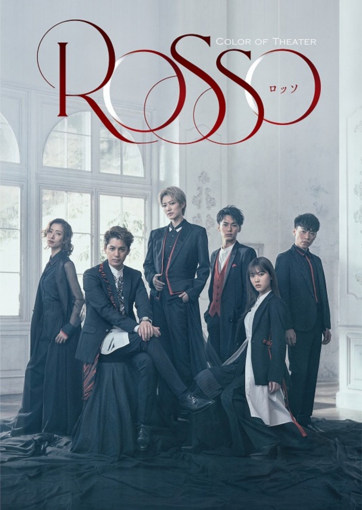

2021/0513Thu8歳☺︎
5月11日で
乃木坂46に加入して
8周年でした。
みなさんいつも応援してくれて
本当にありがとうございます！
みなさんの事がとっても大切で
愛おしいです☺︎
こんばんは！
伊藤純奈です！
Color of Theater 「ROSSO」
出演させて頂きます！
［出演］七海ひろき
大野拓朗
伊藤純奈（乃木坂46）
伶美うらら
東山光明
内海啓貴 ほか
［演出］TETSUHARU
［脚本］浅井さやか（One on One）
［公演日程］2021年6月27日(日)〜6月30日(水)
［劇場］TBS赤坂ACTシアター
久々の舞台です〜嬉しいなあ
無事幕が上がることを祈って...！
期間は短いですが最高の時間になる予感☺︎
公式HP
公式Twitter
https://twitter.com/coloroftheater?s=21

かっこいい〜！
先行抽選受付も始まっていますので
みなさんぜひぜひ〜
そして来週のANNに
みりあとおじゃましますꪔ̤̥
それでは！
2021/05/13 17:48
コメント(243)
Bella Junna ! ✨
純奈ちゃん、こんばんは
デビュー8歳おめでとう＼(^o^)／！！
純奈ちゃんを好きになって、まだ半年だけど
本当に好きになって良かった

舞台観に行けないけど楽しんでね（n‘∀‘)η
ANN、じゅんみりとか最高～
おふざけしすぎないようにね(笑)
今日も大好き
デビュー8歳おめでとう＼(^o^)／！！
純奈ちゃんを好きになって、まだ半年だけど
本当に好きになって良かった
舞台観に行けないけど楽しんでね（n‘∀‘)η
ANN、じゅんみりとか最高～
おふざけしすぎないようにね(笑)
今日も大好き
純奈ちゃんデビュー8周年おめでとう！
ミーグリもアンダラも楽しみ！
舞台は明日当落発表だから緊張する～
当たるといいな！
ともみ
ミーグリもアンダラも楽しみ！
舞台は明日当落発表だから緊張する～
当たるといいな！
ともみ
純奈ちゃん今日もお疲れ様です！ブログ更新ありがとう〜！
そして8歳のお誕生日おめでとう☺︎
今こうして純奈ちゃんを応援出来てて幸せです
これからも応援させてください！
舞台もとってもたのしみだ〜明日当落発表どきどき
ビジュが爆イケすぎるよ〜（ ; ; ）♡
ぜひ肉眼で拝みたいよおお〜
お体にはお気を付けてくださいね☺︎
ではまたね〜
そして8歳のお誕生日おめでとう☺︎
今こうして純奈ちゃんを応援出来てて幸せです
これからも応援させてください！
舞台もとってもたのしみだ〜明日当落発表どきどき
ビジュが爆イケすぎるよ〜（ ; ; ）♡
ぜひ肉眼で拝みたいよおお〜
お体にはお気を付けてくださいね☺︎
ではまたね〜
1枚目の写真可愛すぎてびっくりしたー！
舞台の写真は美しすぎてびっくりしたー！
純奈ちゃんのお顔はアップでも欠点がひとつも見つからなくて素敵です。
舞台の写真は美しすぎてびっくりしたー！
純奈ちゃんのお顔はアップでも欠点がひとつも見つからなくて素敵です。
8周年おめでとうございます。
来週のANN楽しみです。
来週のANN楽しみです。
純奈ちゃん、デビュー8周年おめでとうございます。
舞台も頑張ってください応援しています。（観に行きたぁーい）
今回のミーグリには参加予定です。
舞台も頑張ってください応援しています。（観に行きたぁーい）
今回のミーグリには参加予定です。
ほんっっっっっとに可愛すぎてやっぱり純奈ちゃんが1番大好きです！
そしてじゅんみりが尊いです…泣
ANN楽しみにしてます！
ROSSOの純奈ちゃん、誰よりもカッコよくて惚れちゃいました…
そしてじゅんみりが尊いです…泣
ANN楽しみにしてます！
ROSSOの純奈ちゃん、誰よりもカッコよくて惚れちゃいました…
ブログ更新有難う＾＾
8周年おめでとう。
こちらこそいつもありがとう(T ^ T)❤︎
純奈ちゃんを見てたくさん元気をもらってます
舞台もおめでとう！遠くからすっごく応援しています☺︎
楽しんでね〜〜〜
来週のANNたのしみすぎる！！！私のだいすきなだいすきなじゅんみりは嬉しすぎます尊いです（ ; ; ）（ ; ; ）♡
かわいい写真もありがとう☺︎☺︎☺︎❤︎
純奈ちゃんだいすき！！！！！
8周年おめでとう。
こちらこそいつもありがとう(T ^ T)❤︎
純奈ちゃんを見てたくさん元気をもらってます
舞台もおめでとう！遠くからすっごく応援しています☺︎
楽しんでね〜〜〜
来週のANNたのしみすぎる！！！私のだいすきなだいすきなじゅんみりは嬉しすぎます尊いです（ ; ; ）（ ; ; ）♡
かわいい写真もありがとう☺︎☺︎☺︎❤︎
純奈ちゃんだいすき！！！！！
純奈さん、みんなお待ちかねのブログ更新ありがとうございます。８歳おめでとうございます。これからの８年もメンバーとして頑張ってください。
純奈さんの綺麗な鮮やかな橙色のロングの髪、「おいしい坂道」もですよね。お似合いです。ROSSOではもしや、赤？「おいしい坂道」の動画の素朴な純奈さん、とても親近感が持てて好きです。ご褒美がバーガーとは、意外でした。美味しそうでしたが、２千円のバーガーには、残念ながらなかなか手が出せません。
ライブ、舞台とおお忙しいだと思いますが、体に気をつけて頑張ってください。
純奈さんの綺麗な鮮やかな橙色のロングの髪、「おいしい坂道」もですよね。お似合いです。ROSSOではもしや、赤？「おいしい坂道」の動画の素朴な純奈さん、とても親近感が持てて好きです。ご褒美がバーガーとは、意外でした。美味しそうでしたが、２千円のバーガーには、残念ながらなかなか手が出せません。
ライブ、舞台とおお忙しいだと思いますが、体に気をつけて頑張ってください。
デビュー8周年おめでとうございます！！9年目も応援してます！みーみちゃんとのコンビの空気感が乃木坂の中でも特に大好き！annちょー楽しみに待ってます！忙しいと思いますが、体には気をつけてね。
伊藤さんが、朗読劇を除いて、演劇の舞台に立たれるのは、2020年1,2月の｢阿呆浪士」以来かな。
伊藤さんが願われているとおり、舞台が無事開演されること。観劇のお客様の前で、伊藤さんが活躍されること、私は願っています。
お体を大切に☺
伊藤さんが願われているとおり、舞台が無事開演されること。観劇のお客様の前で、伊藤さんが活躍されること、私は願っています。
お体を大切に☺
オレンジ似合いすぎるよ、、かわいい、、
純ちゃん8歳おめでとう！！
これからも坂道を登っていく純ちゃんを応援してるよ！
二期生でわちゃわちゃしてる時の安心してる姿が特に好きだよー。舞台もおめでとうー！！体調にだけは気をつけてね。
これからも坂道を登っていく純ちゃんを応援してるよ！
二期生でわちゃわちゃしてる時の安心してる姿が特に好きだよー。舞台もおめでとうー！！体調にだけは気をつけてね。
じゅんなちゃん☆★タンポポだけど。.:*:・'°☆
( ^-^)ノ∠※。.:*:・'°☆
じゅんなちゃん☆二期生ライブが忘れられない！！！
ロッソのじゅんなちゃんカッコいい！！！
雰囲気あるー！
観れたらいいなー！！！
本気の(質問)リクエストしていいですか？
Q乃木坂のメンバー個人個人の(自分的な)
呼び方を教えて下さい。
小説でこれわからないと書きづらいのです泣
大好きーーーーーーーーー
最後に一言！
『じゅんなちゃんはタンポポの人生の美しすぎる男らしさの人だよ！！』
( ^-^)ノ∠※。.:*:・'°☆
タンポポでした(ﾉﾟ∀ﾟ)ﾉ
祝8周年！これからも応援します！
カッコいいですね〜！
o(^^)o
o(^^)o
僕も乃木坂46好きになり
約8年になりましたー
舞台の抽選忘れてやした(゜ロ゜)
阿呆浪士ぶりだっけ？
また純奈の舞台が観れて嬉しいです
約8年になりましたー
舞台の抽選忘れてやした(゜ロ゜)
阿呆浪士ぶりだっけ？
また純奈の舞台が観れて嬉しいです
ANN楽しみです。
ブログ更新ありがとう〜！！！！8年…！！！！！
8年も乃木坂のメンバーで、アイドルでいてくれて本当にありがとう 純ちゃんを応援できてる今のわたしはわたしの誇りです！！！！そして久しぶりの舞台！！！！！！東京は今の状況で行くのはダメだなと思うのでお家から応援してます、頑張ってください
8年も乃木坂のメンバーで、アイドルでいてくれて本当にありがとう 純ちゃんを応援できてる今のわたしはわたしの誇りです！！！！そして久しぶりの舞台！！！！！！東京は今の状況で行くのはダメだなと思うのでお家から応援してます、頑張ってください
純奈ちゃんブログ更新ありがとう！
舞台出演おめでとう！
どんどん活躍の場を広げていく純奈ちゃん素敵です！
舞台にアンダラと忙しいと思うけど体調に気を付けて頑張ってね！
ずっと応援してます！
舞台出演おめでとう！
どんどん活躍の場を広げていく純奈ちゃん素敵です！
舞台にアンダラと忙しいと思うけど体調に気を付けて頑張ってね！
ずっと応援してます！
純ちゃんはやっぱりこういう衣装がすごく似合うな～
来週のオールナイト 楽しみにしてるよ～
来週のオールナイト 楽しみにしてるよ～
純奈ちゃんブログ更新ありがとう！！
8歳おめでとう！純奈ちゃんに出会えて本当に良かった！幸せです！
舞台出演おめでとう！！！すっごい楽しみ〜〜！頑張ってね！！
ミーグリ取れたから舞台のお話とかできるのすごく楽しみにしてる！
ANNめちゃめちゃ楽しみだー！！にこにこでひなも幸せになる^^
体調気をつけて過ごしてね〜！大好きだよ♡
8歳おめでとう！純奈ちゃんに出会えて本当に良かった！幸せです！
舞台出演おめでとう！！！すっごい楽しみ〜〜！頑張ってね！！
ミーグリ取れたから舞台のお話とかできるのすごく楽しみにしてる！
ANNめちゃめちゃ楽しみだー！！にこにこでひなも幸せになる^^
体調気をつけて過ごしてね〜！大好きだよ♡
純奈さんお疲れ様です
2期ライブから
ちょっと時間過ぎたけど
改めて、感動的なライブだったな
当日は情緒不安定だつたから
円盤化されて見直したいよ
筒美京平コンサートも
観させて頂きました
笑顔と元気いっぱい
ひなちまと二人
キラッキラのアイドルちゃん❤️
スンゴイ出演者の中
ひけをとる事無く
ステージで輝いてた☺️
次はアンダーライブ
噂によると横アリ？
現地で見たsingoutぶり
だから有観客でやって欲しかった
配信でも純の歌は伝わるから
楽しみだよ ️
そして久しぶりの舞台
ビジュアルだけを見ると
なないろみたいな
カッコいい感じ？
それとも新たな一面？
2つとも感想を
早く伝えたいな
2期ライブから
ちょっと時間過ぎたけど
改めて、感動的なライブだったな
当日は情緒不安定だつたから
円盤化されて見直したいよ
筒美京平コンサートも
観させて頂きました
笑顔と元気いっぱい
ひなちまと二人
キラッキラのアイドルちゃん❤️
スンゴイ出演者の中
ひけをとる事無く
ステージで輝いてた☺️
次はアンダーライブ
噂によると横アリ？
現地で見たsingoutぶり
だから有観客でやって欲しかった
配信でも純の歌は伝わるから
楽しみだよ ️
そして久しぶりの舞台
ビジュアルだけを見ると
なないろみたいな
カッコいい感じ？
それとも新たな一面？
2つとも感想を
早く伝えたいな
八周年おめでとう～♪
う～ん、カッコいい
久々に舞台観に行きたいな～
う～ん、カッコいい
久々に舞台観に行きたいな～
デビュー8周年おめでとうございます!
純奈～ こんにちは
ブログの更新ありがとうございます。
２期生としてのデビュー「８周年」、おめでとうございます。
３・４期ライブを見ながら、２期生ライブを思い出し、改めて感動し直しました。「アナスターシャ」「ゆっくりと咲く花」が鮮明に焼き付いています。
舞台に賭ける純奈、「ROSSO」、カッコいいですね。厳しい状況下ですが、無事に公演が行われますよう、お祈りしております。
そして、その前に「アンダーライブ」、こちらでもカッコいいところお願いしますね。画面の前から、応援していますから‥‥。「錆びたコンパス」、楽しみにしています。
もうひとつ、来週の「ANN」も楽しみにしております。
ブログの更新ありがとうございます。
２期生としてのデビュー「８周年」、おめでとうございます。
３・４期ライブを見ながら、２期生ライブを思い出し、改めて感動し直しました。「アナスターシャ」「ゆっくりと咲く花」が鮮明に焼き付いています。
舞台に賭ける純奈、「ROSSO」、カッコいいですね。厳しい状況下ですが、無事に公演が行われますよう、お祈りしております。
そして、その前に「アンダーライブ」、こちらでもカッコいいところお願いしますね。画面の前から、応援していますから‥‥。「錆びたコンパス」、楽しみにしています。
もうひとつ、来週の「ANN」も楽しみにしております。
純奈ちゃんブログ更新ありがとう！！
8歳おめでとう！純奈ちゃんに出会えて本当に良かった！幸せです！
舞台出演おめでとう！！！すっごい楽しみ〜〜！頑張ってね！！
ミーグリ取れたから舞台のお話とかできるのすごく楽しみにしてる！
ANNめちゃめちゃ楽しみだー！！にこにこでひなも幸せになる^^
体調気をつけて過ごしてね〜！大好きだよ♡
8歳おめでとう！純奈ちゃんに出会えて本当に良かった！幸せです！
舞台出演おめでとう！！！すっごい楽しみ〜〜！頑張ってね！！
ミーグリ取れたから舞台のお話とかできるのすごく楽しみにしてる！
ANNめちゃめちゃ楽しみだー！！にこにこでひなも幸せになる^^
体調気をつけて過ごしてね〜！大好きだよ♡
８周年おめでとうございます。
純奈ちゃんを好きになれて幸せです。
元気をもらったり、
何かを頑張るきっかけになったり、
いつもありがとうございます。
舞台当たるといいな。
舞台のお稽古とかアンダラの準備とか、
いろいろ応援してます。
ANNも楽しみです！
純奈ちゃんを好きになれて幸せです。
元気をもらったり、
何かを頑張るきっかけになったり、
いつもありがとうございます。
舞台当たるといいな。
舞台のお稽古とかアンダラの準備とか、
いろいろ応援してます。
ANNも楽しみです！
純奈ちゃんデビュー8周年おめでとう☺︎
出会えてほんとに良かったです。乃木坂46に入ってくれてありがとう。
これからもずっと大好きです☺︎
舞台出演もおめでとう！
まだチケット当たってないけど、絶対行くね〜
久しぶりの舞台楽しんでね☺︎
改めて8周年おめでとう。
リク
出会えてほんとに良かったです。乃木坂46に入ってくれてありがとう。
これからもずっと大好きです☺︎
舞台出演もおめでとう！
まだチケット当たってないけど、絶対行くね〜
久しぶりの舞台楽しんでね☺︎
改めて8周年おめでとう。
リク
ブログ更新有り難うございます。
そして、８周年おめでとうございます＼(^^)／
それから、乃木恋26彼氏に成った自分にもおめでとう！
先日のイベント発熱のため行けなかったので凄く嬉しい(^^)
一昨年のイベントも、会場に向かう電車内で祖母の訃報が届き引き返してたので・・・。
実は先日の発熱の後、腎臓をやってしまっていた事が発覚し入院してました。が、本日13日(日付は替わりましたけど)に退院しました(^_^)v
イベントまで体調管理しっかりして、３度目の正直！行けたらいいな～(^-^)もちろん舞台も見に行きたいな(^-^)
純奈さん、お身体大切に無理しないで下さいね。
それでは(^-^)/
※これって掲載されないかもな～。まあいいか(^^)
そして、８周年おめでとうございます＼(^^)／
それから、乃木恋26彼氏に成った自分にもおめでとう！
先日のイベント発熱のため行けなかったので凄く嬉しい(^^)
一昨年のイベントも、会場に向かう電車内で祖母の訃報が届き引き返してたので・・・。
実は先日の発熱の後、腎臓をやってしまっていた事が発覚し入院してました。が、本日13日(日付は替わりましたけど)に退院しました(^_^)v
イベントまで体調管理しっかりして、３度目の正直！行けたらいいな～(^-^)もちろん舞台も見に行きたいな(^-^)
純奈さん、お身体大切に無理しないで下さいね。
それでは(^-^)/
※これって掲載されないかもな～。まあいいか(^^)
こんばんは。インスタ、モバメ、ブログ更新と、今日はたくさんありがとうございます。
まずは舞台出演おめでとう！ビジュアル最高だね！歌とかダンスもあるなんて、本当に嬉しいよ。必ず観に行きます。
そしてその前にアンダラもあるね。たくさんリクエストしましたよ。純奈ちゃんの良さが光るライブになりますように。来週のANNも楽しみにしてます。
最後に、8周年おめでとう！可愛くて、カッコよくて、日々美しくなっていく純奈ちゃんを、応援できて幸せです。これからもずっと大好きな推しメンです！9年目もよろしくお願いします。
まずは舞台出演おめでとう！ビジュアル最高だね！歌とかダンスもあるなんて、本当に嬉しいよ。必ず観に行きます。
そしてその前にアンダラもあるね。たくさんリクエストしましたよ。純奈ちゃんの良さが光るライブになりますように。来週のANNも楽しみにしてます。
最後に、8周年おめでとう！可愛くて、カッコよくて、日々美しくなっていく純奈ちゃんを、応援できて幸せです。これからもずっと大好きな推しメンです！9年目もよろしくお願いします。
おはよう(^^)
デビュー８周年おめでとう✨
２期生もう大ベテランですが、
これからも期待していますよ☆
新舞台出演もおめでとうです！
ビジュアル凄く格好良いです✌
普段は凄く可愛いらしいので、
ギャップ萌えも魅力的ですね♪
ANNみり愛ちゃんとのコンビ、
とってもワクワクしてますよ～☺
デビュー８周年おめでとう✨
２期生もう大ベテランですが、
これからも期待していますよ☆
新舞台出演もおめでとうです！
ビジュアル凄く格好良いです✌
普段は凄く可愛いらしいので、
ギャップ萌えも魅力的ですね♪
ANNみり愛ちゃんとのコンビ、
とってもワクワクしてますよ～☺
おはよう 純奈さま！
格好良くて、でもおちゃめな純奈ちゃん
笑うと実は可愛い純奈ちゃん！
今までいっぱいありがとう。
これからも宜しくね。
掘ちゃんも少し落ち着いたかなあ？
2期生でまた食べたり飲んだり出来ると良いね。
アンダーライブ頑張ってね。
格好良くて、でもおちゃめな純奈ちゃん
笑うと実は可愛い純奈ちゃん！
今までいっぱいありがとう。
これからも宜しくね。
掘ちゃんも少し落ち着いたかなあ？
2期生でまた食べたり飲んだり出来ると良いね。
アンダーライブ頑張ってね。
純奈ちゃん8周年おめでとうございます☺️
舞台、アンダラも決まって忙しいと思うけど体調に気をつけて頑張ってね
地方だから舞台観に行けなくて悔しい…。
その分、ミーグリ、アンダラ行きますわ
ANNも楽しみにしています
舞台、アンダラも決まって忙しいと思うけど体調に気をつけて頑張ってね
地方だから舞台観に行けなくて悔しい…。
その分、ミーグリ、アンダラ行きますわ
ANNも楽しみにしています
純奈ちゃん、こんにちは
8周年、おめでとう
長い様で、あっという間だったかな？
なかなか1つの仕事を8年も続けるのは大変な事で、辛い事や悲しい事、嬉しい事や楽しい事、本当に色々あったと思うけど、続けてくれてありがとう
次のシングルこそ、選抜に選ばれたら良いね
それから、舞台観に行けないけど、無事に幕が上がり、全公演とも無事に終わる事を祈ってます☆彡.。
ANNは夜中だけど、頑張ってね
じゃぁ、またね☆彡.。
8周年、おめでとう
長い様で、あっという間だったかな？
なかなか1つの仕事を8年も続けるのは大変な事で、辛い事や悲しい事、嬉しい事や楽しい事、本当に色々あったと思うけど、続けてくれてありがとう
次のシングルこそ、選抜に選ばれたら良いね
それから、舞台観に行けないけど、無事に幕が上がり、全公演とも無事に終わる事を祈ってます☆彡.。
ANNは夜中だけど、頑張ってね
じゃぁ、またね☆彡.。
こんにちは。
755には最近コメントしてるけど、ブログには初めてコメントします、初めまして。笑
8周年おめでとう⭐︎\( ˙▿︎˙ )/
私は応援し始めてまだまだ浅いけど、それでも既にたくさん力もらってます、ありがとう。
オレンジ、ステキだね、とってもかわいいです…！
755には最近コメントしてるけど、ブログには初めてコメントします、初めまして。笑
8周年おめでとう⭐︎\( ˙▿︎˙ )/
私は応援し始めてまだまだ浅いけど、それでも既にたくさん力もらってます、ありがとう。
オレンジ、ステキだね、とってもかわいいです…！
デビュー８周年おめでとうございます。
今、先日CSで放送されたアンダーライブ見てます。
本当に皆んな楽しそうで、この光景が今月末、配信とは言え再び見られると思うとワクワクが止まりません。
バタバタな状況だと思いますが体に気を付けて楽しんでください。
Color of Theater 「ROSSO」抽選申込みしました。
約１年半振りの舞台ですね。当選してると良いな。
久々に舞台に立つ純奈さんを見られることを楽しみにしています。頑張ってください。
今、先日CSで放送されたアンダーライブ見てます。
本当に皆んな楽しそうで、この光景が今月末、配信とは言え再び見られると思うとワクワクが止まりません。
バタバタな状況だと思いますが体に気を付けて楽しんでください。
Color of Theater 「ROSSO」抽選申込みしました。
約１年半振りの舞台ですね。当選してると良いな。
久々に舞台に立つ純奈さんを見られることを楽しみにしています。頑張ってください。
オールナイト楽しみ！
舞台も楽しみ！
純ちゃん8歳おめでとう！！
舞台も楽しみ！
純ちゃん8歳おめでとう！！
純奈8周年おめでとう！！！
舞台頑張れ！！
舞台頑張れ！！
純奈ちゃんブログ更新ありがと〜！
舞台の制服姿、凛々しい(^^)！
キャー！惚れてまう(^^)〜。
アンダラ、観るね｜
舞台の制服姿、凛々しい(^^)！
キャー！惚れてまう(^^)〜。
アンダラ、観るね｜
純奈ちゃーん！！
舞台当選してたよ～！
嬉しすぎる
めちゃくちゃ楽しみにしてるよ！
お稽古頑張ってね！
舞台当選してたよ～！
嬉しすぎる
めちゃくちゃ楽しみにしてるよ！
お稽古頑張ってね！
僕も純奈ちゃんが大切で愛おしいです。8歳おめでとう･:*+.(( °ω° ))/.:+
舞台のビジュアルめちゃくちゃイケメンすぎて…
無事に開幕、そして楽日まで何事もなく終われますように！
(そろそろ観劇したい…)
舞台のビジュアルめちゃくちゃイケメンすぎて…
無事に開幕、そして楽日まで何事もなく終われますように！
(そろそろ観劇したい…)
アンダーライブのリクエストしました！
「ないものねだり」を純奈のソロで(^ ^)
期待してます！
「ないものねだり」を純奈のソロで(^ ^)
期待してます！
8周年おめでとう！！！
舞台絶対見に行きます！
舞台絶対見に行きます！
じゅん～！
八周年、おめでとー！
イオンモールの握手会が
なつかしいぜ！
また握手したいなぁ。
アンダラ、すごく楽しみにしてるから
ガンバってな！！
八周年、おめでとー！
イオンモールの握手会が
なつかしいぜ！
また握手したいなぁ。
アンダラ、すごく楽しみにしてるから
ガンバってな！！
これからも推し続けるよ～！
このご時世に舞台公演ができるなんて本当に有難いことだよね。
ライブみたいに配信もあれば地方在住でも観劇できるのにな～。
(๑•́ω•̀)
久々の舞台
頑張ってね！
(๑•̀ㅂ•́)و✧
このご時世に舞台公演ができるなんて本当に有難いことだよね。
ライブみたいに配信もあれば地方在住でも観劇できるのにな～。
(๑•́ω•̀)
久々の舞台
頑張ってね！
(๑•̀ㅂ•́)و✧
お疲れ様です、伊藤さん。
乃木坂46に加入して8周年ということで、おめでとうございます！
Color of theater 「ROSSO」に出演されるということで、おめでとうございます！
次回の乃木坂46 オールナイトニッポン、聴きたいなと思います！
そうですね、そして伊藤さん、今回のブログを見てもね、やっぱり、キレイだなと思いますね
そうですね、取り急ぎね、お伝えしましたね
またなにかお話したいことがあればコメントするかと思います。
健康には気を付けてお過ごしください！
乃木坂46に加入して8周年ということで、おめでとうございます！
Color of theater 「ROSSO」に出演されるということで、おめでとうございます！
次回の乃木坂46 オールナイトニッポン、聴きたいなと思います！
そうですね、そして伊藤さん、今回のブログを見てもね、やっぱり、キレイだなと思いますね
そうですね、取り急ぎね、お伝えしましたね
またなにかお話したいことがあればコメントするかと思います。
健康には気を付けてお過ごしください！
こんにちは～
、、今日も、、よく晴れたね～
、、舞台、、～赤い靴を、、巡っての物語、、なんだね～
、、アンデルセンの、、パン、、(笑)じゃない、、赤い靴のお話、、が、、有名だけど、、
、、原作は、、すごくシリアス、、みたいだね～
、、じゃあ、、またね～
、、今日も、、よく晴れたね～
、、舞台、、～赤い靴を、、巡っての物語、、なんだね～
、、アンデルセンの、、パン、、(笑)じゃない、、赤い靴のお話、、が、、有名だけど、、
、、原作は、、すごくシリアス、、みたいだね～
、、じゃあ、、またね～


☆ ☆
☆ ８周年 おめでとうございます ☆
☆ ☆
☆☆☆☆☆☆☆☆☆☆☆☆☆☆☆☆☆☆☆☆
純奈、こんばんは。。。。。
さわやかな五月晴れ続きでしたが、今日は雨でした、、、
ブログ更新 ありがとう !!
☆"ROSSO" の抽選結果は、明日14日です、、、当選願う !!
これは、乃木坂先行かな ?
万一のときは、プレリク先行へ、、、
それにしても、カッコイイ なぁ、、、
☆モバメ、毎日 ありがとう、、、
ぷ 写真も たくさん待っています、、
☆『アンダーライブ2021』待ち遠しい、、、
企画などのリクエスト
"8th year BD LIVE Blu-ray Box" のセトリを見ながら
純奈 中心のユニット、
ソロ、デュエットなどの選曲、等々
600字弱になっていました。
どこかに採用されたらいいな、とは思いますが
また純奈を見られることこそがうれしい、、、
第４波は登山中ですね、、、東京は、大阪を追いかけて増加??
３回目の『緊急事態宣言』昨日延長 !!
くれぐれも身体を大切にしてくださいね。。。。。